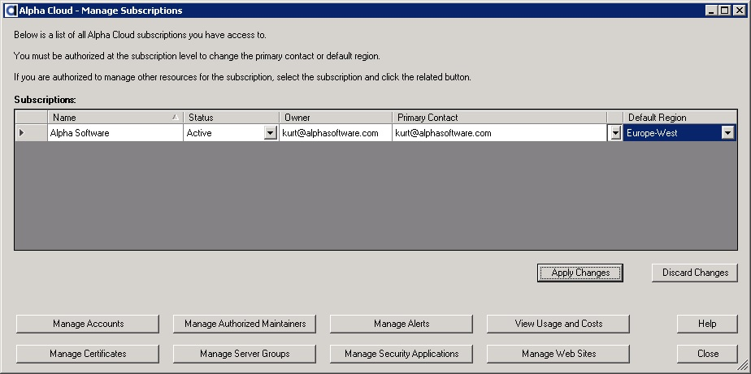
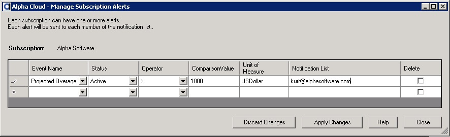

Open the Manage Subscriptions dialog, by clicking the Alpha Cloud toolbar icon on the web control panel and selecting "Advanced" and then "Subscriptions" from the drop down menu.

The Manage Subscriptions dialog will display.

Select the subscription you want to maintain alerts for by clicking on the row where the subscription is displayed.
Click the button labeled "Manage Alerts" toward the bottom of the dialog.
The Manage Subscription Alerts dialog will display as below.

To add a new alert, click the new row (indicated by the * to the left).
Select the event name to receive notifications for.
For events with quantities, select the operator and comparison values to filter notifications.
Enter one or more e-mail addresses in the notification list separated by commas.
To update an alert, click the row and column you want to change.
To delete an alert, check the box labeled Delete to the right of a row.
Note: You can disable an alert without deleting it, by setting the status to "Disabled".
Once you have finished making your changes, click the button labeled "Apply Changes" to save your changes or "Discard Changes" to reset the dialog.